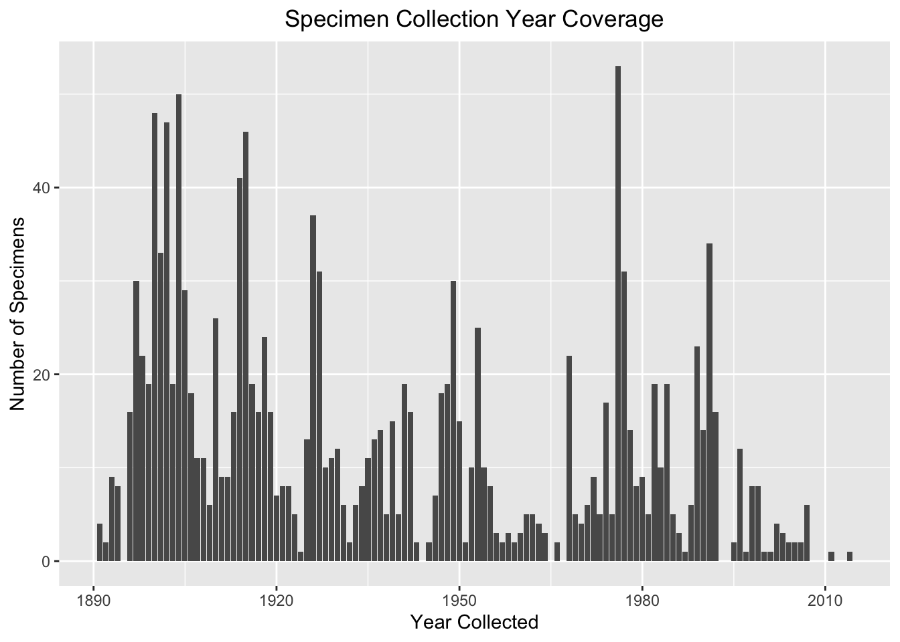
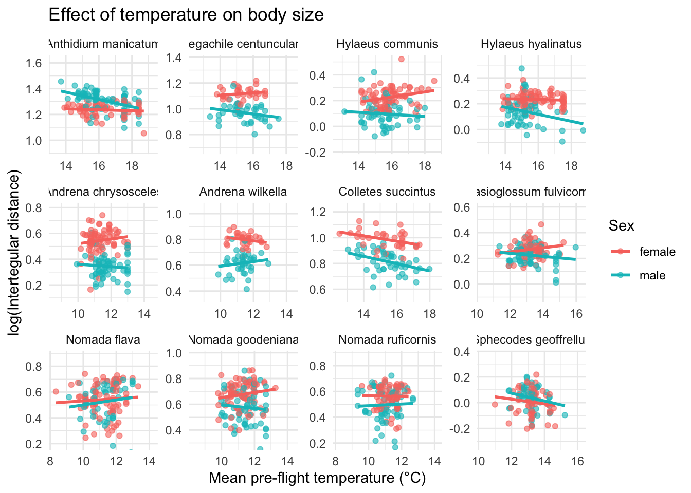
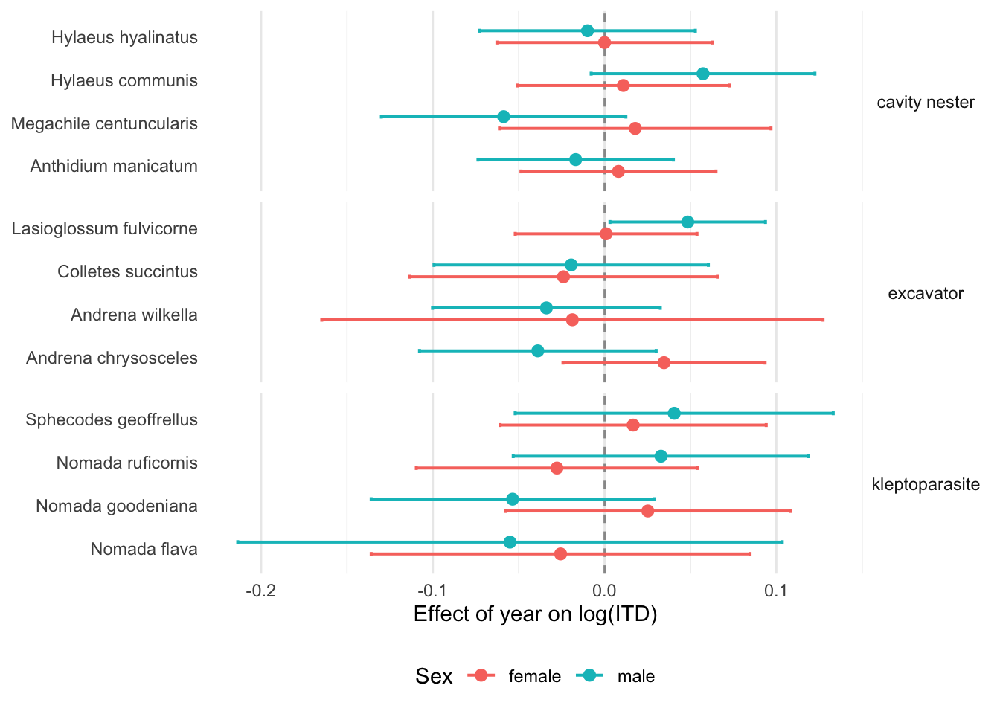

── Conflicts ────────────────────────────────────────── tidyverse_conflicts() ──
✖ dplyr::filter() masks stats::filter()
✖ dplyr::lag() masks stats::lag()
ℹ Use the conflicted package (<http://conflicted.r-lib.org/>) to force all conflicts to become errors
library(emmeans)
Welcome to emmeans.
Caution: You lose important information if you filter this package's results.
See '? untidy'
library(forcats)
Load in data
# Load in databees_temps <-read.csv(here("Data/14_04_26_bees_temps_5km.csv"))
Set up
# Log transform measurementsbees_temps <- bees_temps %>%mutate(ITD = intertegular_distance_mm,HW = HW_mm,FW = FW_length_mm,tibia = tibia_length_mm,log_ITD =log(ITD),log_HW =log(HW),log_FW =log(FW),log_tibia =log(tibia) )# Rescale yearbees_temps$year_rescaled <- (bees_temps$year -1800) /100# Scaled to "centuries since 1800" to improve model stability# Set species order so they are organised by ecology and consistent across plotsspecies_order <-c("Anthidium manicatum","Megachile centuncularis","Hylaeus communis","Hylaeus hyalinatus","Andrena chrysosceles","Andrena wilkella","Colletes succintus","Lasioglossum fulvicorne","Nomada flava","Nomada goodeniana","Nomada ruficornis","Sphecodes geoffrellus")bees_temps$full_name <-factor(bees_temps$full_name, levels = species_order)
Data Exploration
Plots for overall dataset
# Plot the number of bee specimens measured from each yearggplot(bees_temps, aes(x = year)) +geom_bar() +ggtitle("Specimen Collection Year Coverage") +theme(plot.title =element_text(hjust =0.5)) +xlab("Year Collected") +ylab("Number of Specimens")

# Plot the number of specimens of each sex for each speciesggplot(bees_temps, aes(x = full_name, fill = sex)) +geom_bar(position ="dodge") +labs(title ="Number of Specimens by Sex per Species",x ="Species",y ="Number of Specimens",fill ="Sex" ) +theme_minimal() +theme(plot.title =element_text(hjust =0.5),axis.text.x =element_text(angle =45, hjust =1) )
# Plot for Year and ITDmake_species_plot_year_centered(df = bees_temps,xvar ="year_rescaled",yvar ="log_ITD",x_span =1.5,y_span =0.8) +labs(title ="Effect of year on body size",x ="Year",y ="log(Intertegular distance)" )
# Mean temp and ITDmake_species_plot(df = bees_temps,xvar ="mean_preflight_temp",yvar ="log_ITD",x_span =6,y_span =0.7)+labs(title ="Effect of temperature on body size",x ="Mean pre-flight temperature (°C)",y ="log(Intertegular distance)" )
`geom_smooth()` using formula = 'y ~ x'

Summary statistics
Calculate the mean and variation in size per species
# Separate LM for each species# Ensure variables are factorsbees_temps <- bees_temps %>%mutate(sex =factor(sex),ecology =factor(ecology),full_name =factor(full_name) )species_list <-levels(bees_temps$full_name)models_main <-list()models_interactions <-list()for (sp in species_list) { df_sp <- bees_temps %>%filter(full_name == sp)# Base model m1 <-lm(log_ITD ~ sex + mean_preflight_temp + year_rescaled + latitude, data = df_sp)# Interaction model m2 <-lm(log_ITD ~ sex*mean_preflight_temp + sex*year_rescaled + latitude, data = df_sp) models_main[[sp]] <- m1 models_interactions[[sp]] <- m2}
Compare models
# Compare models to see if interaction is needed using AICaic_results <-lapply(species_list, function(sp) {AIC(models_main[[sp]], models_interactions[[sp]])})names(aic_results) <- species_listaic_results
Calculate and plot the sex-specific effects of temperature and year
#Sex-specific effects of temperature and year on log(ITD) using emtrends from interaction models# Ecology lookupspecies_eco <- bees_temps %>%distinct(full_name, ecology) %>%arrange(ecology, full_name)species_list <- species_eco$full_name# Helper to extract sex-specific slopes for any predictorextract_trends <-function(model_list, var_name, specs_formula =~ sex) { df <-do.call(rbind, lapply(names(model_list), function(sp) { mod <- model_list[[sp]]emtrends( mod,specs = specs_formula,var = var_name,infer =c(TRUE, TRUE) ) %>%as.data.frame() %>%mutate(species = sp) })) df %>%left_join(species_eco, by =c("species"="full_name")) %>%mutate(species =factor(species, levels = species_list),ecology =factor(ecology),sex =factor(sex, levels =c("female", "male")) )}# Helper to plot the slopesplot_trends <-function(df, slope_col, xlab) {ggplot(df, aes(x = .data[[slope_col]], y = species, color = sex)) +geom_vline(xintercept =0, linetype =2, linewidth =0.5, colour ="grey60") +geom_errorbar(aes(xmin = lower.CL, xmax = upper.CL),orientation ="y",position =position_dodge(width =0.55),width =0.18,linewidth =0.7 ) +geom_point(position =position_dodge(width =0.55),size =2.4 ) +facet_grid(ecology ~ ., scales ="free_y", space ="free_y") +labs(x = xlab, y =NULL, color ="Sex") +theme_minimal(base_size =11) +theme(panel.grid.major.y =element_blank(),strip.text.y =element_text(angle =0),legend.position ="bottom" )}
Plot for year (FIX ORDER)
# Sex-specific slopes for yearyear_sex <-extract_trends(models_interactions, "year_rescaled")plot_trends(year_sex, "year_rescaled.trend", "Effect of year on log(ITD)")

Plot for temperature (FIX ORDER)
# Sex-specific slopes for temperaturetemp_sex <-extract_trends(models_interactions, "mean_preflight_temp")plot_trends(temp_sex, "mean_preflight_temp.trend", "Effect of temperature on log(ITD)")
Allometry (refine)
library(dplyr)library(broom)library(ggplot2)# 1. Centre temperaturebees_temps <- bees_temps %>%mutate(temp_c = mean_preflight_temp -mean(mean_preflight_temp, na.rm =TRUE) )# 2. Helper function to fit + extract interaction termextract_allometry <-function(response_var) { models <- bees_temps %>%split(.$full_name) %>%lapply(function(df_sp) { formula <-as.formula(paste(response_var, "~ log_ITD * temp_c"))lm(formula, data = df_sp) })bind_rows(lapply(names(models), function(sp) {tidy(models[[sp]]) %>%filter(term =="log_ITD:temp_c") %>%mutate(species = sp) })) %>%mutate(trait = response_var)}# 3. Run for each traitcoef_allometry <-bind_rows(extract_allometry("log_HW"),extract_allometry("log_FW"),extract_allometry("log_tibia"))# 4. Add ecology + ordering + effect sizecoef_allometry <- coef_allometry %>%left_join(species_eco, by =c("species"="full_name")) %>%mutate(ecology =factor(ecology),species =factor(species, levels =rev(species_order)),trait =factor(trait, levels =c("log_HW", "log_FW", "log_tibia")),slope_change_2SD = estimate *2 )# 5. Plot (facetted by trait)ggplot(coef_allometry, aes(x = estimate, y = species, colour = ecology)) +geom_vline(xintercept =0, linetype ="dashed") +geom_point(size =2) +geom_errorbarh(aes(xmin = estimate - std.error,xmax = estimate + std.error),width =0.2) +facet_wrap(~ trait, scales ="free_x") +theme_minimal() +labs(x ="Change in allometric slope with temperature",y ="Species",colour ="Ecology" ) +scale_color_manual(values =c("#E7B800", "#a6754b", "#b275eb"))
Warning: `geom_errorbarh()` was deprecated in ggplot2 4.0.0.
ℹ Please use the `orientation` argument of `geom_errorbar()` instead.